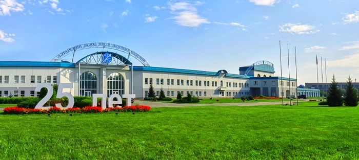

АЗПИ 25 лет! Полет нормальный!
5 октября 2016.
Девятого сентября 2016 года Алтайский завод прецизионных изделий отметил двадцатипятилетний юбилей со дня своего образования. В зале краевой филармонии для передовиков производства, лучших специалистов АЗПИ, коллег-партнеров и почетных гостей завода было организовано торжественное заседание и праздничный концерт.
Губернатор Алтайского края А.Б. Карлин от имени президента Российской Федерации В.В. Путина поздравил коллектив АЗПИ с юбилеем, отметив вклад предприятия в развитие города и края. Губернатор вручил председателю правления АЗПИ В.А. Герману благодарность президента Российской Федерации трудовому коллективу за достигнутые трудовые успехи и показатели в профессиональной деятельности.
Отмечая высокую квалификацию сотрудников АЗПИ, А.Б. Карлин назвал их профессорами своего дела и выразил надежду на дальнейшее развития предприятия, укрепление лидирующих позиций в отрасли, разработку и внедрение новых масштабных проектов, пожелал коллективу крепкого здоровья и новых трудовых побед.
Благодарственное письмо председателю правления АЗПИ В.А. Герману вручил митрополит Барнаульский и Алтайский Сергий. Руководитель алтайской епархии отметил созидательный характер деятельности предприятия.
Одним из ключевых потребителей продукции АЗПИ является ПАО «КАМАЗ». Первый заместитель генерального директора ПАО «КАМАЗ» Ю.И. Герасимов, поздравив руководство и коллектив с юбилеем, подчеркнул важность сотрудничества между нашими предприятиями. Ю.И. Герасимов засвидетельствовал неизменно высокое качество топливной аппаратуры производства АЗПИ.
Многолетнее сотрудничество связывает АЗПИ с ведущими иностранными производителями топливной аппаратуры. С поздравлениями и пожеланиями дальнейших успехов выступил представитель фирмы R. Bosch GmbH В. Гергенрейдер (на фото – слева).
Больше двадцати лет продолжается успешное партнерство АЗПИ с известным американским разработчиком и производителем топливной аппаратуры AMBAC International. Первым куратором совместного проекта с американской стороны был Тим Хилли (на фото – справа). Господин Хили поздравил руководство и коллектив АЗПИ с достигнутыми успехами.
Несмотря на доминирующий аграрный характер края, возрождение его экономической и производственной мощи невозможно без развития промышленного сектора. Союз промышленников Алтая по достоинству оценил работу коллектива завода и его руководства, избрав председателя правления АЗПИ В.А. Германа председателем правления Союза Промышленников Алтая. Руководитель делегации СПА Е.К. Ганеман подчеркнул уверенность в успешном развитии промышленности края под руководством нового председателя правления. Он также отметил, что основание для такой уверенности очевидно демонстрирует состояние дел на АЗПИ, превратившимся за 25 лет из небольшого цеха с устаревшим оборудованием в первоклассное инновационное предприятие мирового класса.
Успехи коллектива получили достойную оценку не только городской и краевой администрации, но и министерства промышленности и торговли Российской Федерации. Лучшие сотрудники предприятия получили награды за добросовестный труд.
Поздравления гостей, представителей деловых партнеров перемежались выступлениями творческих коллективов края.
В завершении торжественного заседания с ответным словом выступил председатель правления АЗПИ В.А. Герман. Он поблагодарил всех работников и ветеранов завода за труд, подчеркнув, что в успехе предприятия есть вклад каждого сотрудника. В.А. Герман подтвердил приверженность АЗПИ курсу на постоянное развитие и выразил уверенность в том, что через 25 лет успехи завода превзойдут общие ожидания так же, как на сегодняшний день они превзошли планы и прогнозы, бывшие у руководства к моменту создания АЗПИ.